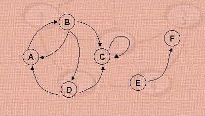
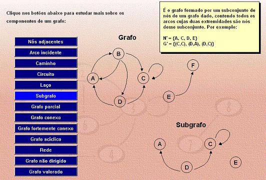
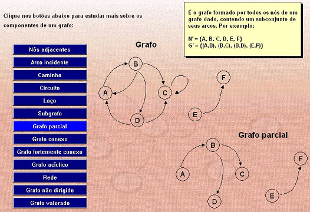

Vejamos agora alguns termos utilizados para identificar certos elementos de um grafo ou tipos especiais de grafos, utilizando como referência, para alguns casos, o grafo abaixo:

a) nós-adjacentes - são nós ligados por um arco: o nó A é adjacente ao nó D.
b) arco incidente - um arco é incidente em um nó quando leva a esse nó: o arco (C,D) é incidente em D.
c) caminho - sequência de um ou mais arcos: um caminho que leva o nó A ao nó C é o caminho dado por: < (A, B), (B, D), (D, C) >
d) circuito – é um caminho que leva ao mesmo nó do qual saiu: < (A,B), (B,D), (D,A) >
e) laço – é um circuito de um único arco: < (C,C) >
f) subgrafo – é o grafo formado por um subconjunto de nós de um grafo dado, contendo todos os arcos cujas duas
extremidades são nós desse subconjunto. Por exemplo, o grafo definido abaixo é um sugrafo do grafo original:
N’ = { A, C, D, E } G’ = { (C, C), (D, A), (D, C) }

g) grafo parcial – é o grafo formado por todos os nós de um grafo dado, contendo um subconjunto de seus arcos. Por exemplo:
N’ = { A, B, C, D, E, F } G’ = { (A, B), (B, C), (B, D), (E, F) }

h) grafo conexo – é um grafo no qual existe ao menos um nó a partir do qual existem caminhos para todos os outros nós
(no exemplo abaixo, esse nó é o C).
i) grafo fortemente conexo – é um grafo no qual existem, para todos os nós, caminhos para todos os outros nós.
j) grafo acíclico – é um grafo que não tem circuitos.
k) rede – há muitos tipos de redes. Em nosso curso vamos nos restringir à rede adequada para o uso de sistemas
PERT-CPM (Program Evaluation and Review Technique – Critical Path Method). É definida como um grafo acíclico, com dois nós especiais:
- nó fonte: a partir do qual se podem atingir todos os outros nós (nó A)
- nó sorvedouro: pode ser atingido a partir de qualquer outro nó (nó F)
l) grafo não dirigido – é um grafo em que as relações entre os nós são simétricas (se existe um arco (A,B) então
também existe o arco (B,A), e ambos são representados apenas por uma linha não orientada ligando A e B
m) grafo valorado – grafo com valores associados aos nós ou aos arcos. A figura abaixo representa uma rede cujos
nós são tarefas avaliadas em $ e cujos arcos estão valorados em dias de duração.